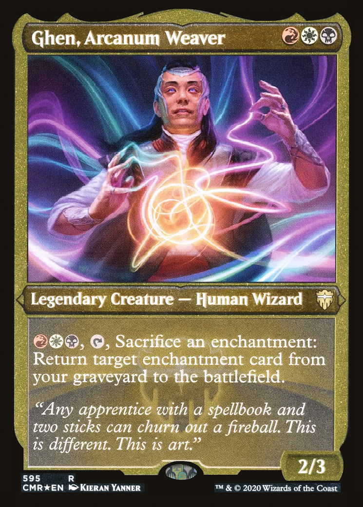

- Kayaking
- Magic the Gathering
- Bridge
- Lego Star Wars
- Warhammer 40k
I've kayaked quite a bit previously, but until recently never owned my own. So I bought an old one second hand and spent the summer doing it up.
Here are some pictures of before and after my work on it.
In order to restore it, I first had to clean it and sand off the old paint job. This proved to be more difficult than expected, especially around the rim of the cockpit where it was awkward to reach.
After that, I primed and painted the boat, giving it several coats of each colour; using masking tape to get a clean line between the green and the yellow. After painting was finished, I sprayed the whole thing with a marine lacquer. Here are some pictures from along that process.
Then some pictures of it out and about:


I learned to play Magic at university, mostly playing commander which is quite a casual format.
I have three decks which I usually play with. One being a heavily modified pre-constructed deck, which is now a Jhoria, Weatherlight Captain artifact deck. Another being a Kodama of the West Tree deck, which has a +1/+1 counters theme. And the other being an enchantments deck, with Ghen, Arcanum Weaver as the commander.
I've been playing bridge for about 8 years now, but didn't really get into it until starting university. Now there are many conventions that I use in order to bid more effectively. I had been elected onto the University of Cambridge Bridge Club's committee, competed in the Eastern Counties League, and taught the beginner sessions at the club.
Here is a document of the bridge conventions that my partner and I use. I put this together for the beginners at the club, to act as a lookup to help them remember the conventions we taught them.
Quite into collecting LSW, as well as some of the other larger models from other themes. The NASA sets are pretty cool, the Porsche 911 is another favourite of mine. Most of my collection is Star Wars though.
I'll later add my own images.
Got into model building through Airfix WW2 models, and eventually got into Warhammer 40k. Here is a small selection of the models that I've built and painted.
I'm quite into the tabletop side of the hobby now too, and play the game regularly at a local club. My main faction is Necrons